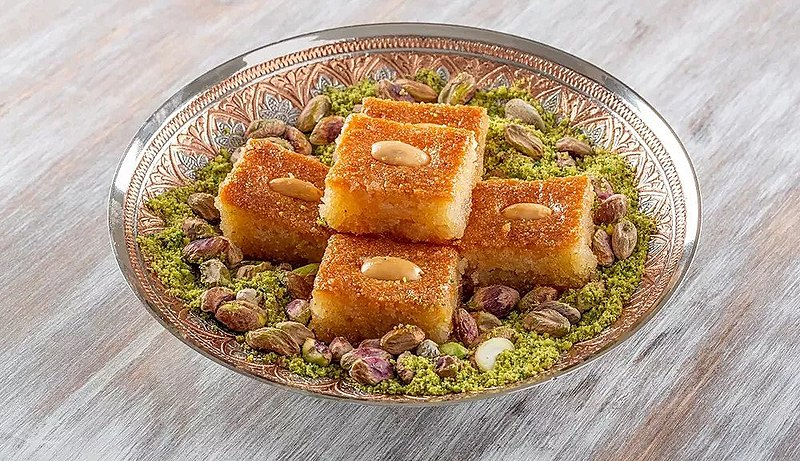

Qalb el louz

Description:
A sweet and delicate collection of semolina, nuts, and covered with orange blossom water and honey.
The name "Qalb el louz" translates to "Heart of nuts", it is also known as Chamia or H'rissa depending on where you are.
This is a traditional Algerian dish although it does resemble other renditions from across the Arab world.
It is said to have originated from Andalusia, which is a Arab influenced area in southern spain.
Ingredients:
Ingredients for Semolina base:
- 500 g of large grained semolina - "grosse semoule"
- 125 g butter + for coating the pan
- 200 g granular sugar
- 4 tbs orange blossom water- fleur d’oranger
- Pinch of salt
Ingredients for the filling:
- 250 g - 1 cup almonds toasted and coarsely ground
- 50 g - 3 TBS sugar
- 1 tsp of cinnamon
- 1 tbs orange flower water
- 1.5 tsp cinnamon
- OPTIONAL: also add 1.5 tsp cinnamon or caradmom
Optional Decoration:
Steps:
Directions for the whole serving:
- In a dry pan, lightly toast the semolina grains stirring constantly about 2 minutes. Don't toast the semolina as long as you would for tamina. Be sure to watch it carefully as it can easily burn. Toasting the semolina will add a slightly nutty taste to the Qalb bel louz and help with the absorption of the syrup. Once toasted, set aside to cool. It's need to be cool enough to handle with your hands. You can optionally leave this step out if you don't want a slightly nutty taste.
- Melt the butter in a small sauce pan then let it cool enough to handle with your hands.
- In a large bowl add the semolina and sugar.
- Gradually mix in the butter with your hands rubbing the grains the same way you would rub butter grains of couscous.
- Add in the orange blossom water and water slowly in the same manner in which you rubbed the semolina, gradually slowly rubbing the water into the grains. It should feel damp but not too wet now. Kinda like wet sand.
- Cover well then allow to rest in the fridge overnight so the semolina grains swell, for up to 12 hours.
- The next day you can prepare the syrup. This syrup will keep for a long time, so you can easily double or triple the recipe so you have some for next time. You can store the syrup on the countertop or even fridge.
- HEAT sugar, water, and lemon juice on medium fire. Stir to dissolve the sugar completely.
- Turn the fire down to a low simmer. Simmer for about 10-15 minutes until the syrup is thick - do not stir once it reaches a boil.
- Remove from heat, add orange blossom water and butter. Allow to cool. It is important that the syrup be cold before pouring over the Qalb bel louz.
- Grind the almonds in a food processor or other kitchen machine. The almonds can be as coarse or fine as you like them.
- Combine the ingredients for the filling. Set aside.
- Take the semolina out of the fridge and allow to come up to room temperature for about half hour.
- Break up any lumps of semolina with your fingers, in the same manner in which couscous grains are broken up after steaming.
- Meanwhile, butter a your baking dish VERY liberally. The type of baking dish you use is up to you. Traditionally in Algeria a huge round baking dish is used, then the Qalb bel louz is cut into retangular slices. You can use a round 21- 24cm tart pan or square 23 cm square, brownie pan, a 34cm x 20cm retangular pan or even a 33x 23cm retangular dish. But keep in mind the Qalb bel louz should be thin enough to have the dessert soaked completely in the syrup + have a little floating on top, as it soaks in the syrup as it sits.
- Then preheat your oven to 180°C or 350°F.
- Sprinkle the baking pan very lightly with some semolina.
- Divide the semolina mixture in half, then layer one portion of the mixture on the bottom.
- Smooth out the mixture with the back of a spoon. But don't pack the mixture in.
- Now add the almond filling with very light hands. Smooth gently and evenly. But be careful to not compact the layers.
- Then using the remaining semolina mixture and smooth out evenly. The Qalb bel louz should be about 4-5cm in width - top to bottom but really depends on your baking sheet. If it's too tall, and you don't have enough syrup you need to either use another baking dish or make more syrip. The reason for this is, that you need space for the syrup you will be pouring on the top later.
- Score the Kalb bel louz for easier portioning and cutting later gently. Brush with the additional 100g of butter over the dish, again very lightly being careful not to compact the semolina or ruin your score marks. You may or may not need all of it. Place an almond (or two) in the center of each portion.
- Place in a preheated oven of 180° - 350° degree for 1 hour. Keep monitoring the Qalb bel louz to ensure that the edges do not burn. If the edges are getting too browned or burned, lower the heat in your oven. The Qalb bel louz will be little more browned on the edges but should not be burned. Burned Qalb bel louz is bitter and very untasty!
- Remove the cake from the oven. Then turn off your oven. Run your knife around the edges of the baking dish. And cut into portions where you scored the cake.
- Pour the room temperature syrup immediately over the cake. The cake will absorb the syrup - it will appear swampy - like your cake is ruined. Don't worry this is how it should be. And depending on the size of your pan you may only need about 3/4 of the total syrup for absorbition. Test if the syrup has absorbed by gently pushing the semolina aside (at the edges) with a knife.
- Return the cake to the oven for 5-8 minutes. Remove and re-cut the cake into shape again.
- It will take about an hour for the syrup to absorb into the cake and to set. It usually needs an overnight rest to soak it all in.
- When placing onto a plate, be sure to use a wide spatula as this dessert is very crumbly and sticky.
- Serve with mint tea and some nuts or Halwa turc as a part of your Ramadanques Soirée.
Source: Thetealtadgine.com
Return to main page